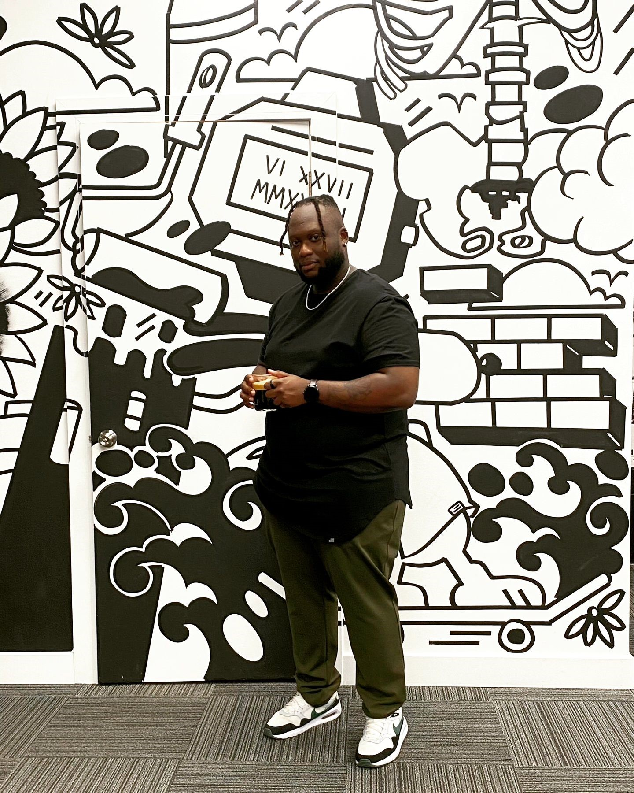

Hey there! I'm Lando, and I'm thrilled to welcome you to my corner of the internet.
As a black content creator, I've found my passion in bringing diverse perspectives and stories to life.
My journey in the digital realm began as an enthusiast and evolved into an intermediate web developer.
I revel in the art of crafting digital experiences that are both visually captivating and functionally seamless.
From coding elegant layouts to implementing dynamic features, I enjoy the challenge of turning ideas into interactive realities.
With a robust background in quality assurance, I've honed my skills in ensuring that every project meets the highest standards.
From meticulous testing to refining user experiences, I thrive in guaranteeing excellence in every aspect of the content and projects I'm involved in.
Away from the digital canvas, you'll find me immersed in the captivating world of anime. The diverse storytelling and unique art styles never fail to captivate my imagination. Additionally, in a previous chapter of my life, I embraced the world of music, channeling my creativity through melodies and rhythms.
This space isn't just about showcasing my work—it's about connecting with fellow creators, learners, and enthusiasts.
Together, let's explore the intersections of creativity, technology, and storytelling.
Join me as I navigate the ever-evolving digital landscape and share my experiences, insights, and perhaps a sprinkle of anime-inspired wisdom along the way.
Thanks for stopping by, and I can't wait to embark on this exciting journey together!
your newest friend.
